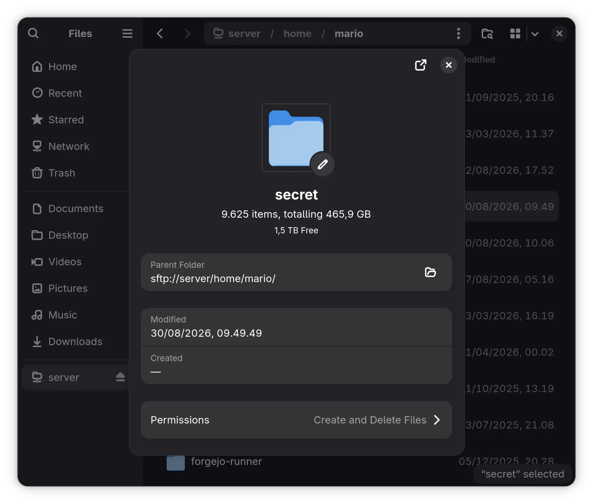

Getting to know ZFS
ZFS introduced from the perspective of someone who wants to bring online a domestic storage pool, with parity and encryption.
Having all my SSDs constantly almost full, despite the high storage prices in this period, I've decided to get myself more storage. This time I wanted to have
redundancy, since I have already been victim of those dreadful I/O errors that
dmesg(1) writes in red. So I got a hard drive
bay with five 3.5″ SATA slots, with its own cooling
fan and power supply, and three refurbished 1 TB "WD Blue" hard drives1. Nothing special, just enough to get started. If storage prices will ever fall back down2, I plan to buy bigger drives.
While perusing the ArchWiki in search of a way to make
use of this setup, after discarding Btrfs because its RAID implementation is "fatally flawed" along with RAID5 and its unrecoverable read errors, I finally stumbled upon ZFS. Originally I was thinking about using RAID5 with mdadm(8)
and on top of that LUKS2, and finally
top of that maybe ext43, but ZFS takes care of all of it: it works with multiple disks, has native encryption, and is
itself the file system.
The plan is to attach this storage pool to my home server running Debian 13 trixie, so that I can access it through SSH or by mounting the storage with Gnome Files and use it via SFTP.
ZFS concepts
ZFS is a copy-on-write file system. It is structured like a tree, with data residing in its leaves, pointed at by block pointers containing also the size and the checksum of the child. When writing nothing is ever overwritten: the write happens to free space and the pointer of the parent is updated to point to the written data along with the newly calculated checksum of the child. This is repeated from child to parent until the root of the tree (the überblock, from which everything else is reachable) is reached. Until the überblock is updated nothing has changed, the chain of pointers still points to valid data. The überblock is not overwritten either, a copy is added to a ring that cycles. This last switch of the überblock is one atomic operation4. Pretty cool eh?
From this crucial aspect a lot of consequences follow: a ZFS pool is always consistent and there is no need for
fsck(8); creating snapshots and clones is cheap
because the old tree is already there; checksums are useful to detect data corruptions, and to automatically
repair them if there is redundancy. This is done with zpool-scrub(8)
and zpool-resilver(8). Of course copy-on-write has its costs, like the fact that stuff is being
copied. Rewriting stuff will also scatter the blocks around (fragmentation), which will slow down accesses,
especially if the pool is almost full.
Anatomy of a pool
ZFS operates on a hierarchy of virtual devices (VDEVs). The root VDEV is the pool itself. The pool is a unit made up of top-level VDEVs. These are groups of physical (leaf) VDEVs or single devices; at this level RAIDZ or mirroring happens. ZFS stripes data across all the top-level VDEVs of the pool, so if a single top-level VDEV is lost the whole pool is lost. Thus it's riskier to have single devices as top-level VDEVs as there is no redundancy. Striping allows reading data from multiple drives at once concurrently, thus increasing throughput. ZFS also supports using special devices as cache or to store metadata.
RAIDZN is ZFS's implementation of RAID, where N is the number of devices that can fail without losing data, it's also called the parity of the pool. RAIDZ solves the write hole problem, which causes unreadable data errors after a power loss.
Doing the thing
Having somewhat an idea of how all these concepts fit together, I installed ZFS on Debian, following the project's instructions. The packages are:
-
zfs-dkms: the Linux kernel module source code for the ZFS file system. The module is compiled first, then loaded dynamically by the kernel because OpenZFS has a license that is incompatible with that of the Linux kernel. For this reason they are not shipped together, and ZFS is called an out-of-tree component. -
zfs-utils: contains the userland software and tools to interact with the file system. The two important tools arezpool(8)to manage pools andzfs(8)to manage datasets.
Creating the pool
Note: the pool should be created on the system where it is intended to be used. Otherwise, it's possible to move
pools across systems by using
zpool-export(8) and zpool-import(8). The latter is able to discover and import available pools.
To create a RAIDZ1 pool, zpool expects all the devices to be of the same size, to not be a mix of
disks and files or of redundant and non redundant top-level VDEVs. The command receives the structure of the
pool, it can take file, partitions and disks, can groups devices in mirrors, RAIDZ, or have them non redundant.
Disks don't need to be formatted, in my case they had a NTFS partition that was causing the program to return
with an error. After deleting the partitions with fdisk(8) the command succeeded without the need to use the -f
option. For a pool of less than 10 devices, OpenZFS recommends using ID names to identify disks, as these are persistent (at least for disks). Using instead
device names like sda,
sdb, and so on, may cause detection failures by ZFS. The pool I'm creating is called tank
and consists of a single RAIDZ1 top-level VDEV grouping three SATA devices (not partitions).
ashift=12 sets the sector size property to 4096 bytes, which is indicated even for disks with a physical sector size of 512 bytes.
# zpool create -o ashift=12 tank raidz1 \
ata-WDC_WD10EZEX-60WN4A0_WD-WMC6Y0M1APMC \
ata-WDC_WD10EZEX-60WN4A0_WD-WMC6Y0M80DFU \
ata-WDC_WD10EZEX-60WN4A0_WD-WMC6Y0M6T4J75 Now, checking if the pool exists
$ zpool status
pool: tank
state: ONLINE
config:
NAME STATE READ WRITE CKSUM
tank ONLINE 0 0 0
raidz1-0 ONLINE 0 0 0
ata-WDC_WD10EZEX-60WN4A0_WD-WMC6Y0M1APMC ONLINE 0 0 0
ata-WDC_WD10EZEX-60WN4A0_WD-WMC6Y0M80DFU ONLINE 0 0 0
ata-WDC_WD10EZEX-60WN4A0_WD-WMC6Y0M6T4J7 ONLINE 0 0 0
errors: No known data errorsand if it is mounted
$ mount
tank on /tank type zfs (rw,relatime,xattr,noacl,casesensitive)
I can also see that a tank.mount SystemD unit appeared. Nice.
Creating a dataset
Now we have a pool, mounted at /tank, a directory/file hierarchy can be created directly there. But
it may be better to use datasets instead, especially to benefit from encryption. In ZFS a dataset has a type, without specifying -V <size>
we just create a file system (as opposed to a volume), which behaves like other file systems,
can be mounted, and so on. The
keyformat=passphrase property expects 8–512 bytes of data for the passphrase. I'm mounting the
dataset under $HOME so that it can't be read by users who are not me nor root, or are
not in the group of my user, since it has permissions
0750. I'm also disabling auto-mounting both by ZFS and SystemD, because it wouldn't be ideal to
interrupt boot to prompt for the passphrase since this machine is supposed to be connected to remotely. Doing it
at log-in time doesn't seems ideal either with SSH. So the command is
# zfs create -o mountpoint="$HOME/secret" \
-o canmount=noauto -o org.openzfs.systemd:ignore=on \
-o encryption=on -o keyformat=passphrase \
tank/secret
running it with the options -n -v won't create anything, only validate it (no-op, dry
run). Actually running the command prompts to enter the passphrase. After that the dataset should be created:
$ zfs list -o name,used,avail,refer,mountpoint,canmount,encryption,keystatus
NAME USED AVAIL REFER MOUNTPOINT CANMOUNT ENCRYPTION KEYSTATUS
tank 1018K 1.75T 128K /tank on off -
tank/secret 234K 1.75T 234K /home/mario/secret noauto aes-256-gcm available
zfs mount can also be used to see the currently mounted datasets. If everything goes well ZFS
created the mount point at
~/secret, but by default it is owned by root. To fix that
$ sudo chown -R mario:mario ~/secret && chmod 0700 ~/secret
Since auto-mounting is disabled, to use the dataset I run
sudo zfs load-key tank/secret && sudo zfs mount tank/secret, and when I'm done with it I
can just run
sudo zfs unmount tank/secret && sudo zfs unload-key tank/secret
(notice the inverse order), or leave it mounted until shutdown or reboot.

Conclusion
This article was born from notes about ZFS concepts and a sort of journal of the things I did and the commands I run to set up this storage. ZFS seems pretty straightforward to use, its documentation is helpful, I hope to gather more knowledge and experience on it now that I started using it.
This is not intended as a self contained guide. If you want to use ZFS, you should read the OpenZFS documentation and the manual pages: there are features, operations, and other types of uses that I omitted. The ArchWiki is also a good resource.
Finally, I regret to have to state that I did not use AI, LLMs, diffusion models, etc. to do any of this, not even to just have it explain things to me.
-
I probably could have bought one 4 TB drive for a bit more of what I spent for those, but since the points of failures are the single physical drives, I need more than one to have parity.↩︎
-
At the time of writing (2026-08-26), a brand new 16 TB Seagate IronWolf costs €688 on Amazon. For comparison, on 2025-08-26 the same drive was priced at €309, so a 125.7% increase in one year.↩︎
-
I actually don't now if this setup is feasible, or at all recommended. I did not follow through.↩︎
-
A note about notation (even though it is a widespread convention): a command issued when the prompt is the symbol
#indicates that the command is being run asroot, while the prompt$means that the command is being run by an unpriviledged user.↩︎